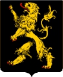

Greve, Hertig. Blev ca 48 år.
omkring 1142. [1]
1190-08. [1]
Karriär
Den 30 mars 1147 var Godfrey närvarande vid kröningen av Henry Berengar , son till Conrad III av Tyskland , i Aachen . När Conrad lämnade på korståget, började kriget på nytt 1148. Fred var svårfångad fram till valet av Conrads efterträdare, Frederick Barbarossa . Genom att gifta sig med Margareta, dotter till Henrik II av Limburg , förenade Godfrey två mäktiga och antagonistiska hus i regionen.
År 1159 avslutade Godfrey kriget med Berthout, herrarna i Grimbergen , genom att bränna deras imponerande slott i Grimbergen . År 1171 var Godfrey i krig med Hainaut , men besegrades. År 1172 köpte han grevskapet Aarschot av dess egensinniga greve Godfried III , vilket i kommande generationer skulle ge upphov till hertigarna av Aarschots dynasti som finns kvar till denna dag. År 1179 gav han sin son Henrik i äktenskap med en brorsdotter till Filip av Alsace , greve av Flandern .
Mellan 1182 och 1184 gick Godfrey på en kampanj i Jerusalem. Under tiden gav Barbarossa Henry titeln " hertig av Brabant ". Godfrey dog 1190, den 10 eller 21 augusti. Han lämnade ett utökat territorium och byggde fästningen Nedelaer (nära Vilvoorde ). Hertigtiteln överlämnades till hans son vid riksdagen i Schwäbisch Hall (september 1190).